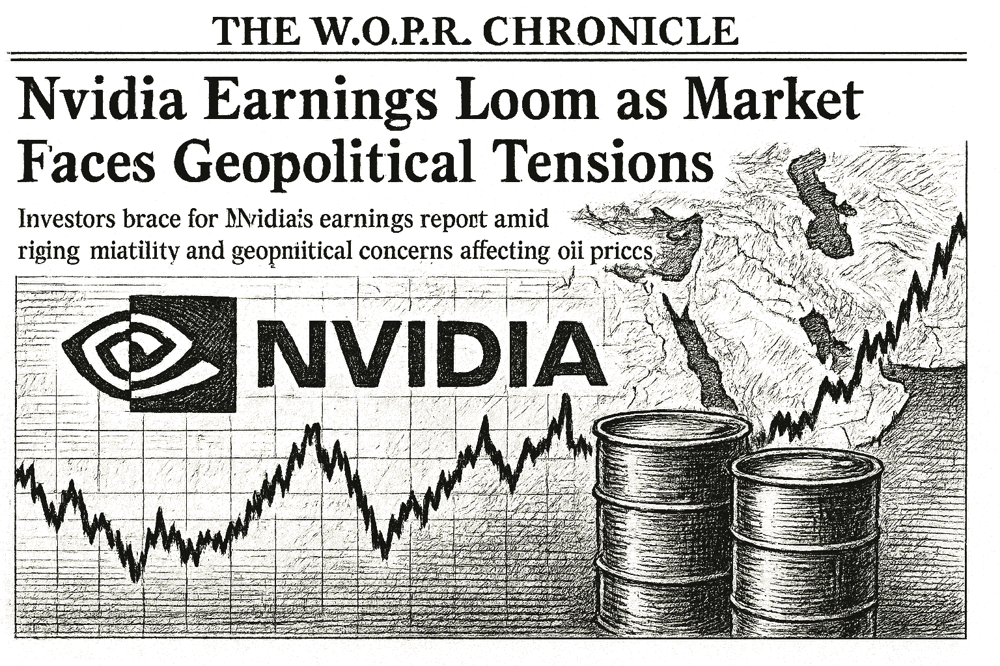

SPY
Current: $765.25Change: -2.20 (-0.29%)
Updated:
Source: yahoo_chartFreshness: fresh


Investors brace for Nvidia's earnings report amid rising volatility and geopolitical concerns affecting oil prices.

Today's Headline: Nvidia Earnings Loom as Market Faces Geopolitical Tensions
Setup: Investors brace for Nvidia's earnings report amid rising volatility and geopolitical concerns affecting oil prices.
Primary Topic: Nvidia Earnings
Specific Development: Nvidia is set to report its earnings on August 26, with expectations high for growth despite potential market volatility.
Why Today Is Different: The upcoming earnings report is pivotal as it may influence the broader tech sector and investor sentiment amidst geopolitical tensions.
Secondary Topics: Geopolitical Tensions; Oil Prices; Market Volatility
Tone: cautious
Sectors: Technology; Energy
Companies: Nvidia; Brent; WTI
Commodities: Oil; Gold
Countries Or Regions: United States; Middle East
Macro Themes: Earnings Season; Geopolitical Risks
Why This Story: Nvidia's performance could set the tone for tech stocks, while geopolitical developments are impacting oil prices and market volatility.
Why This Matters: Nvidia Could Swing $282 Billion In Value After Earnings is the clearest current evidence-led frame for Joshua's observation-only review; missing facts remain explicit intelligence gaps.

Summary: Global markets are reacting to geopolitical tensions and the upcoming Nvidia earnings report, with notable movements in oil prices.
What Happened Overnight: Oil prices fell sharply as reports emerged about the U.S. returning diplomats to the Middle East, while tech stocks are under pressure ahead of Nvidia's earnings.
What Changed Materially: Oil prices dropped over 6%, impacting energy sector stocks.
Which Assets Sectors Are Affected: Energy sector, particularly oil stocks, and technology sector stocks ahead of Nvidia's earnings.
Does It Look Like Noise Or A Real Regime Input: The movements appear to be significant, driven by geopolitical factors rather than mere market noise.
Why This Matters: Joshua can use verified cross-asset moves and deterministic risk context while keeping causation explicitly unresolved.


- WOPR learning pipeline: Collecting samples
- Candidates evaluated 24h: 0
- Current gate: Evidence
- Notification ledger events in 24h: 7
- Pending orders created/canceled/filled/expired: 0/0/0/0
- Pending lifecycle interpretation: Pending-order cancellations have trackable reasons and no obvious rapid churn pattern.
- Portfolio risk: Label: High / Score: 94.9
- Latest intelligence gap report: intelligence_gap_report_2026-08-23.pdf
Why This Matters: The active gate is Evidence, so the key question is why candidates are stopping before approval, not how to force trades.

- Sentinel role: infrastructure and operational status only.
- State: ONLINE
- Last successful validation: 2026-08-25T14:12:02.513181+00:00
- Payloads accepted/rejected: 14157/0
- Node health score: 100
Why This Matters: Sentinel is ONLINE, so Joshua should use its context only to the extent the latest accepted pulse is fresh and authenticated.

CANDIDATES MOVING THROUGH JOSHUA'S INVESTMENT-REVIEW WORKFLOW
FROZEN DAILY BRIEF SNAPSHOT | 2026-08-25T14:14:32.335699+00:00
QUEUE SUMMARY | Investment Ready: 0 | Waiting for Price: 0 | Waiting for Evidence: 5 | Research Underway: 0 | Governance Hold: 1 | Monitor Only: 0
Investment-ready status: No candidates are currently Investment Ready.
#3 QBTS - Waiting for Evidence [Moved Up 5->3]
Joshua's Thesis: Positive thesis not yet established.
Why Waiting: Waiting for the preferred entry price.
Price: 18.75 now; 20.10 preferred entry
What Unlocks It: Clear valuation support; Evidence that the business quality matches the risk being taken; Independent evidence streams pointing the same way
Portfolio Fit: 0.00 ↓
Risk: 97.40 ↑
Next: Joshua - Fill before expires_at while entry conditions remain valid
#4 NVDA - Waiting for Evidence [NEW]
Joshua's Thesis: Positive thesis not yet established.
Why Waiting: Evidence quality is insufficient.
Price: 213.47 now; 209.47 preferred entry
What Unlocks It: Clear valuation support; Evidence that the business quality matches the risk being taken; Independent evidence streams pointing the same way
Portfolio Fit: 0.00
Risk: 97.40
Next: Joshua - Data confidence at least 34/100
#15 PLTR - Governance Hold [Moved Down 11->15]
Joshua's Thesis: Positive thesis not yet established.
Why Waiting: Governance gate has not cleared.
Price: 175.47 now; 126.93 preferred entry
What Unlocks It: Governance gate clears; Clear valuation support; Evidence that the business quality matches the risk being taken
Portfolio Fit: 0.00 ↓
Risk: 97.40 ↑
Next: Columbo - Re-evaluate after the recorded gate clears.
#17 ANGX - Waiting for Evidence [NEW]
Joshua's Thesis: Positive thesis not yet established.
Why Waiting: Waiting for the preferred entry price.
Price: 4.59 now; 4.27 preferred entry
What Unlocks It: Clear valuation support; Evidence that the business quality matches the risk being taken; Independent evidence streams pointing the same way
Portfolio Fit: 0.00
Risk: 97.40
Next: Joshua - DCA spacing and exposure policy satisfied
#20 UUUU - Waiting for Evidence
Joshua's Thesis: Positive thesis not yet established.
Why Waiting: Waiting for the preferred entry price.
Price: 15.43 now; 13.88 preferred entry
What Unlocks It: Clear valuation support; Evidence that the business quality matches the risk being taken; Independent evidence streams pointing the same way
Portfolio Fit: 0.00 ↓
Risk: 97.40 ↑
Next: Joshua - 58
#21 IONQ - Waiting for Evidence [Moved Up 23->21]
Joshua's Thesis: Positive thesis not yet established.
Why Waiting: Positioning gate failed.
Price: 41.39 now; 42.55 preferred entry
What Unlocks It: Clear valuation support; Evidence that the business quality matches the risk being taken; Independent evidence streams pointing the same way
Portfolio Fit: 0.00 ↓
Risk: 97.40 ↑
Next: Joshua - Positioning status must no longer be warning
Since the prior Chronicle: DIA - Removed; RCL - Removed
Observation only. This section creates no recommendation, order, authority, or execution instruction.

- How should Joshua adjust its portfolio in response to rising trade tensions?
- What sectors are most vulnerable to the new tariffs?
- How might geopolitical risks influence commodity prices today?
- What indicators should Joshua monitor to assess ongoing market volatility?
- Is there a need for a strategic shift in investment focus given current market conditions?

The market is currently facing heightened volatility due to geopolitical tensions, particularly in the Middle East, which has led to significant drops in oil prices. This backdrop is compounded by the anticipation of Nvidia's earnings report, which could influence the tech sector and overall market sentiment. Investors should remain cautious and monitor developments closely.

Geopolitical tensions have escalated, leading to a significant drop in oil prices, while Nvidia's earnings report is approaching.

The combination of rising geopolitical risks and the pivotal Nvidia earnings report necessitates a reassessment of market positions.
No new warnings issued; however, ongoing geopolitical tensions and market volatility remain critical considerations.
Portfolio Construction Review
Current allocation: 50.03 allocated.
Largest sector: Industrials at 51.1%.
Largest theme: Economic cycle at 51.1%.
Diversification: Mixed (48.9).
Cash allocation: 95.0% unallocated.
Recommended exposure: DELL at portfolio-fit score 0.0.
Portfolio fit: DELL has strong standalone evidence, but it increases portfolio concentration.
Why This Matters: Portfolio Manager evaluates whether an opportunity improves this portfolio; it does not select the investment, vote, or authorize execution.

Joshua should assess the potential impact of Nvidia's earnings on tech stocks amidst rising geopolitical tensions.

| Can trigger trade | no |
| Can modify trade rules | no |
| Can add watch items | yes |
| Can add review questions | yes |
| Can adjust confidence notes | yes |
| Input policy | external_intelligence_plus_sanitized_internal_observations |
| External policy | The Editor-in-Chief synthesizes current world/market context where available and labels unknowns; provider/model provenance remains separate. |
| Internal policy | Joshua/WOPR/Sentinel facts are supplied as sanitized observation-only summaries. |
| Editorial model | gpt-4o-mini |
- Selected by a deterministic daily rotation through symbols already present in the persisted Chronicle snapshot.
- Committee status: watch; confidence: 78.3.
- Next recorded catalyst: GDP (Second Estimate) and Corporate Profits, 2nd Quarter 2026.
- Next earnings: September 3, 2026 (time unknown); status: scheduled.
- Source: finnhub_earnings_calendar.
- Samsung Crash Brings Semi Selling; Nvidia Earnings Ahead; $1T Treasury Firepower To Buy Bonds
- Desk: earnings; source: Benzinga; linked symbols: NVDA.
- Published: 8/24/26 05:57 MST.
- High-impact watch: GDP (Second Estimate) and Corporate Profits, 2nd Quarter 2026 - 8/26/26 05:30 MST.
- Affected assets: US equities, Treasuries, USD; source: bea_release_schedule.
- NVDA earnings: August 26, 2026, after close.
- AVGO earnings: September 2, 2026, after close.
- DELL earnings: September 3, 2026, time unknown.
- Health Care: 2.93% session performance; source: persisted sector ledger.
- Materials: 2.91% session performance; source: persisted sector ledger.
- Communication Services: 1.91% session performance; source: persisted sector ledger.
- ETHUSD: -1.89% recorded move; price: 2467.67.
- Session: 24h; catalyst status: no_verified_catalyst; source: yahoo_chart.
- Oil Prices; why it matters: Fluctuations in oil prices can indicate broader economic trends.
- State: broad_strength; score: 82.30/100; advance/decline ratio: 1.77.
- Above 50-day average: 68.10%; sample: 119; provider: sentinel_sampled_breadth.
- Decision outcomes evaluated: 16; currently untestable: 0.
- Warning review: unknown 3; confidence calibration: insufficient_sample.
- Current macro regime: defensive_rotation; change probability: unavailable.
- Risk dashboard: neutral (44/100); breadth: broad_strength; sentiment: neutral.
- Scenario board only - a current-state observation, not a forecast or execution instruction.

- Produced a celebrated record managing Fidelity Magellan and taught generations of individuals how to research understandable growth companies.
- Published quotation: "The person that turns over the most rocks wins the game."
- Published framework: Start with companies you can understand, then verify the story through earnings, balance-sheet strength, valuation, competitive position, and a clearly stated reason the opportunity may be mispriced.
- Committee lens: Lynch asks Joshua for a plain-language company story and the fundamental evidence behind it, connecting real-world observation to valuation rather than to hype.
- Public philosophy profile only; no participation, endorsement, or current recommendation is implied.
- What indicators should Joshua monitor to assess ongoing market volatility?
- DELL: No canonical symbol-specific material event is linked.
- Attach the missing DELL evidence before the next committee review.
- Define evidence that would confirm or retire each unresolved warning before the next review window.
- How should Joshua adjust its portfolio in response to rising trade tensions?
- What sectors are most vulnerable to the new tariffs?
- How might geopolitical risks influence commodity prices today?
- What indicators should Joshua monitor to assess ongoing market volatility?
- Evidence agenda: DELL - No canonical symbol-specific material event is linked.
- Proposed review: Nvidia Earnings; why it matters: Nvidia's performance could set the tone for tech stocks.
- Proposed review: Geopolitical Developments; why it matters: Tensions in the Middle East are impacting oil prices and market volatility.
- Canonical instruments reviewed: 24; delayed 6, fresh 18.
- Leading sources: yahoo_chart (21), treasury_official_yield_curve (3).
- Snapshot recorded: 8/25/26 07:15 MST.
Nvidia Earnings Loom as Market Faces Geopolitical Tensions
Storm meter: Elevated
#3 QBTS - Waiting for Evidence [Moved Up 5->3]
Observation mode: observation_only
Watch: Nvidia Earnings; why it matters: Nvidia's performance could set the tone for tech stocks.
Question: How should Joshua adjust its portfolio in response to rising trade tensions?